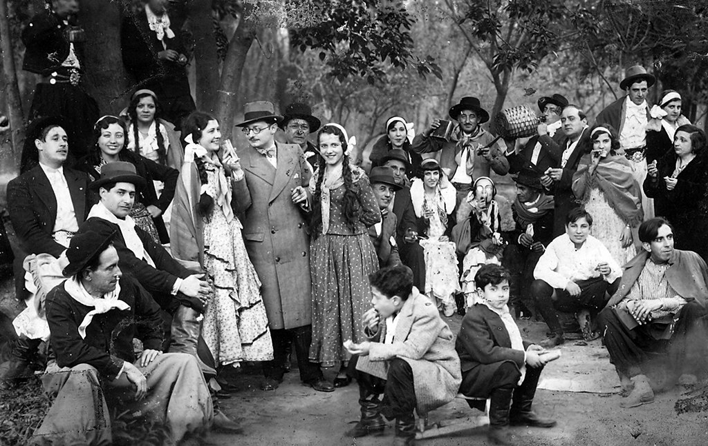
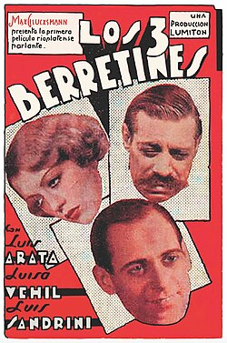

El cine mudo argentino tuvo sus inicios a principios del siglo XX, con la llegada de los primeros aparatos de proyección y la producción de cortometrajes y largometrajes. Estas películas reflejaban la vida social, las tradiciones y los paisajes argentinos, y sentaron las bases para el desarrollo posterior del cine nacional.
Dirigida por Humberto Cairo, fue un gran éxito de taquilla y se considera la primera película argentina de gran escala, con proyección internacional. La historia, inspirada en el Martín Fierro y Santos Vega, se desarrolla tanto en la ciudad como en el campo.
Dirigida por Mario Gallo, esta película dramática está basada en la novela de Eduardo Gutiérrez y cuenta con la actuación de Enrique Muiño.
Basada en la novela de José Marmol, esta película fue dirigida por Enrique García Velloso.
Fue producida por Argentina Sono Film, una de las primeras productoras de cine sonoro en Argentina, y contó con las actuaciones de Libertad Lamarque, Tita Merello y Luis Sandrini. La película se considera un clásico del cine nacional y marcó el debut de varios actores importantes.
Estrenada por la productora Lumiton, esta película aborda temas populares y familiares, conectando con el público de la época a través de elementos como el tango, el fútbol y el cine. La participación de figuras como Luis Sandrini y las orquestas de Aníbal Troilo y Osvaldo Fresedo contribuyó a su popularidad.
